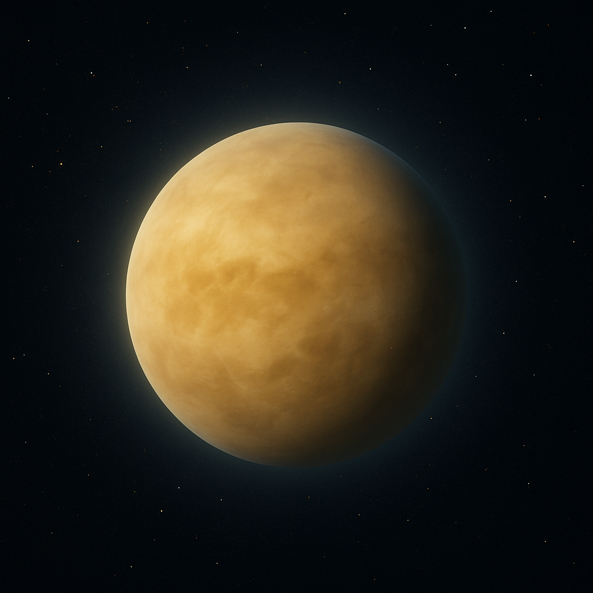
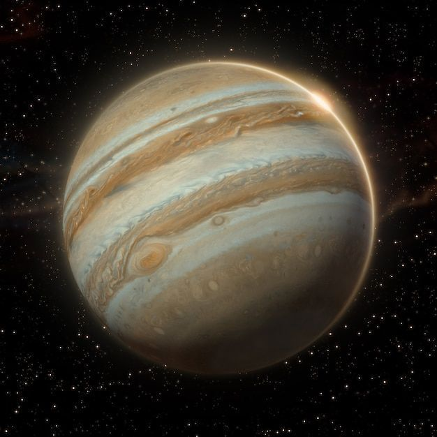
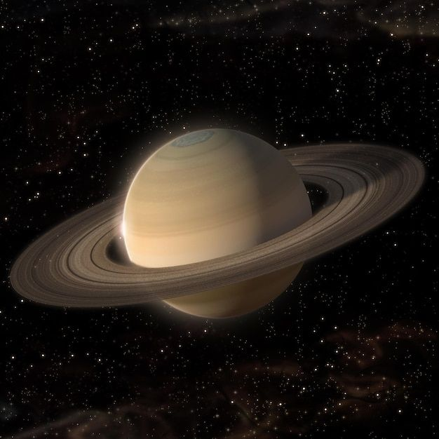

🟠 Venus
El planeta más parecido a la Tierra en tamaño, pero con temperaturas extremas y una atmósfera sofocante.
- Tipo: Rocoso.
- Tamaño: 6.051,8 km.
- Temperatura: Hasta 470 °C.
- Atmósfera: Densa, con dióxido de carbono.
-
Características especiales:
Gira en dirección contraria a casi todos los planetas. -
Dato curioso:
Su efecto invernadero natural lo hace el planeta más caliente.
🌕 Júpiter
El planeta más grande del sistema solar. Con una poderosa atmósfera y una tormenta gigantesca que dura siglos.
- Tipo: Gigante gaseoso.
- Tamaño: 69.911 km.
- Temperatura: Promedio alrededor de -145 °C.
- Atmósfera: Hidrógeno y helio.
-
Características especiales:
Más de 90 lunas y una tormenta gigante (Gran Mancha Roja). -
Dato curioso:
Tiene un campo magnético muy fuerte y una intensa radiación.
🪐 Saturno
Conocido por sus espectaculares anillos, Saturno es un gigante liviano rodeado de más de 140 lunas.
- Tipo: Gigante gaseoso.
- Tamaño: 58.232 km.
- Temperatura: Promedio alrededor de -178 °C.
- Atmósfera: Hidrógeno y helio.
-
Características especiales:
Anillos muy visibles y más de 140 lunas. -
Dato curioso:
Flotaría en agua por su baja densidad.